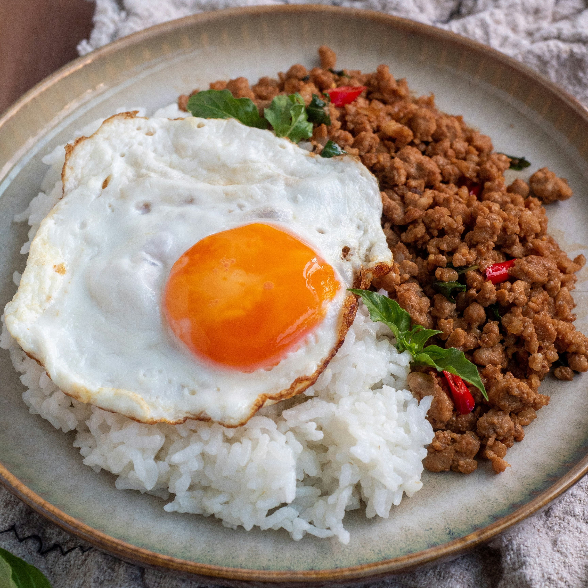
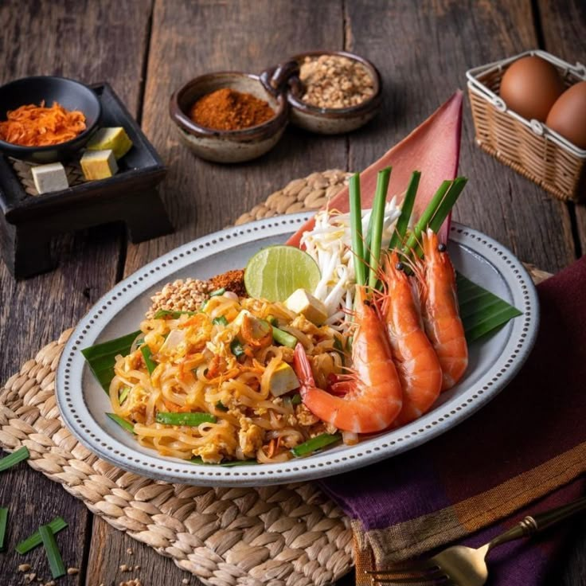
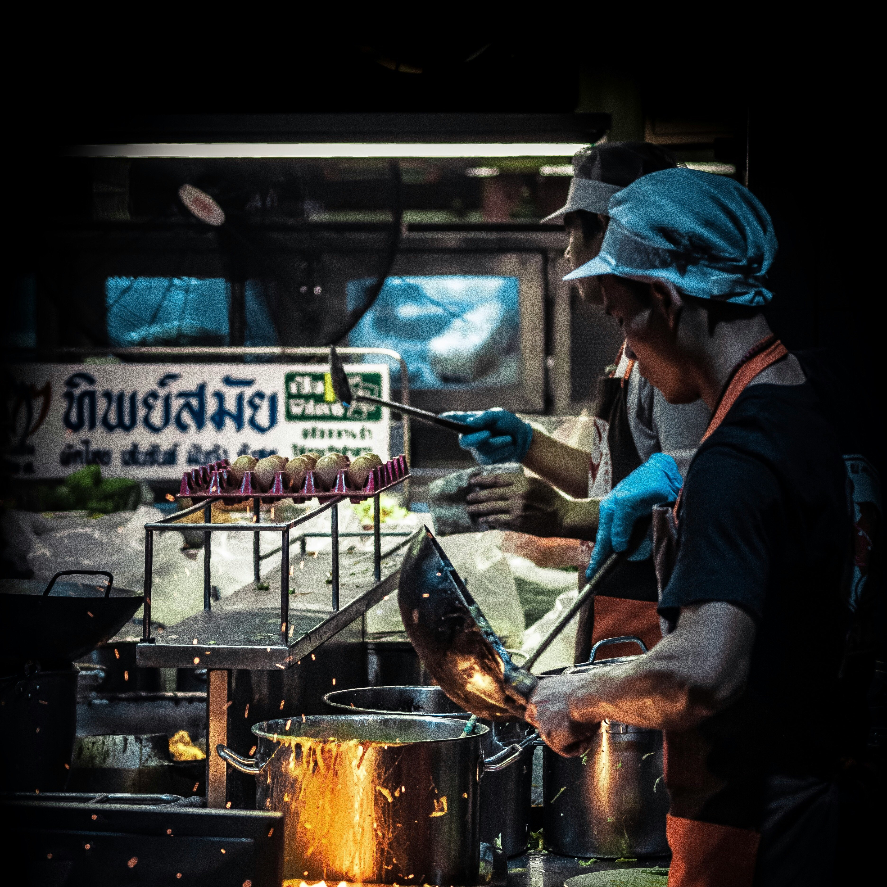

The Balance of Flavors
Thai cuisine is famous for its perfect balance of sweet, sour, salty, and spicy flavors. A single dish
often combines all of these tastes to create harmony. From the tangy lime in Tom Yum soup to the
sweetness of palm sugar in Pad Thai, Thai food is all about contrast and balance. This unique flavor
profile makes Thai dishes both exciting and unforgettable.
Fresh Herbs and Spices
What makes Thai food stand out is the use of fresh herbs and spices. Ingredients like lemongrass, kaffir
lime leaves, galangal, and chili are not only flavorful but also offer health benefits. These natural
ingredients give Thai dishes their signature aroma and depth of taste. Every bite is a combination of
freshness and tradition.


Street Food Culture
Thai food is more than just meals; it is a culture deeply connected to everyday life. Street food stalls
can be found on almost every corner, offering affordable and delicious dishes like Som Tum (papaya
salad), Moo Ping (grilled pork skewers), and Khao Niew (sticky rice). Eating on the street is part of
the Thai lifestyle, bringing people together through food.